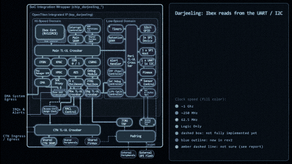
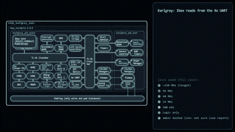

Hardware block diagrams, animated.
IPMotion draws chip and IP-block diagrams in Manim and plays a story over them: a read request travelling through a crossbar, a handshake between master and slave. Describe the story, paste your block diagram, and get a Python script you run on your own machine. Bring your own LLM key. We run nothing.
Open the generatorWhat it can make

GIF coming: DarjeelingDarjeeling
OpenTitan Darjeeling, 49 blocks and 4 regions drawn from the reference picture. Story: Ibex reads from the UART / I2C.

GIF coming: EarlgreyEarlgrey
OpenTitan Earlgrey, 40 blocks. The same engine on a different chip. Story: Ibex reads from the 4x UART.
AXI read handshake
A small master/slave example: address, data and valid/ready channels, step by step.
Generator
Your script
Local setup
The script imports ipmotion_lib, so run it inside the IPMotion repo:
git clone https://github.com/yashv373/IPMotion cd IPMotion pip install "manim==0.21.0" # save the downloaded file here as script.py, then: manim -pql script.py YourSceneName # optional geometric check: python -m ipmotion.lint script.py
Replace YourSceneName with the class name in the script. No LaTeX needed. Use -qh for a sharper render.
About
IPMotion turns a hardware block diagram and a short story into a Manim animation. Ideated by Yashvardhan Singh | Development by Claude Code. Source: github.com/yashv373/IPMotion.